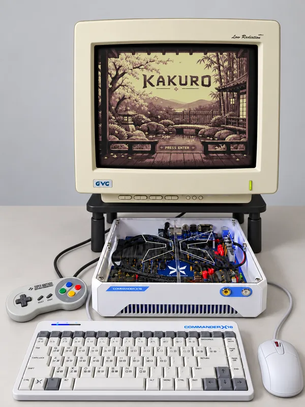
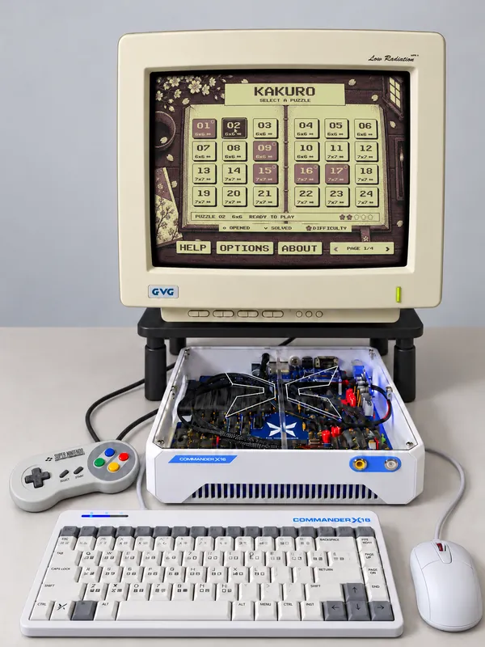
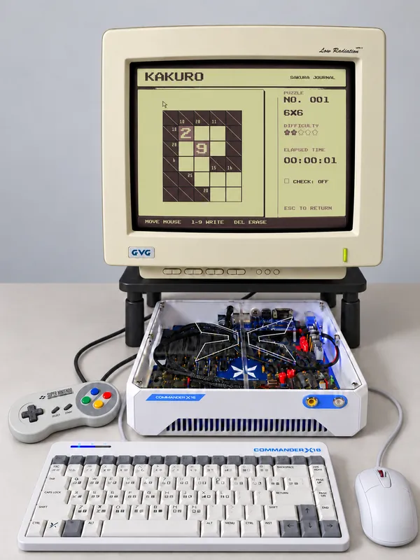

KAKURO FOR THE COMMANDER X16
Kakuro.
A number puzzle that combines crossword-style clues with arithmetic.
Play 96 puzzles, from 6×6 to 10×10, on a Commander X16 emulator in your browser.

Keyboard & mouse, or touch controls below
Swipe to pan the full-size screen; tap to select. Landscape or fullscreen gives you more room.
HOW KAKURO WORKS
Rules & controls
Add to the clue
Each clue gives the sum of the cells to its right or below. Fill the white cells with digits 1–9, without repeating a digit in a run.
Enter digits
Choose a cell with your mouse or by tapping, then enter 1–9. Use Del to erase. On touch screens, use the keypad below the game. Turn on Check when you want a little help.
Choose a puzzle
Select a puzzle from the journal; blossoms indicate difficulty. Press Esc to return. Help explains the rules and controls in more detail.
GAMEPLAY VIDEO
Watch a puzzle come together
From the title screen to puzzle selection, solving a puzzle and returning to the journal. A silent recording of the game in action.
PHOTO GALLERY
Kakuro on the Commander X16

Title screen
The sakura courtyard welcomes you to Kakuro.

Puzzle selection
Browse the journal and choose your next puzzle.

Gameplay
A 6×6 puzzle in progress, with clues and digits.
DOWNLOAD & TECHNICAL DETAILS
CX16 Kakuro
640×480 graphics, four colors, and 512 KiB RAM. The ZIP includes the program, puzzle data, graphics, music and sound effects for a Commander X16 or desktop emulator. Browser progress lasts for this session; restarting or reloading clears it.